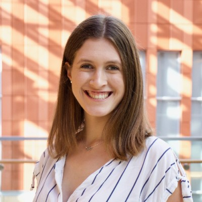
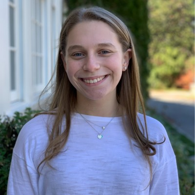
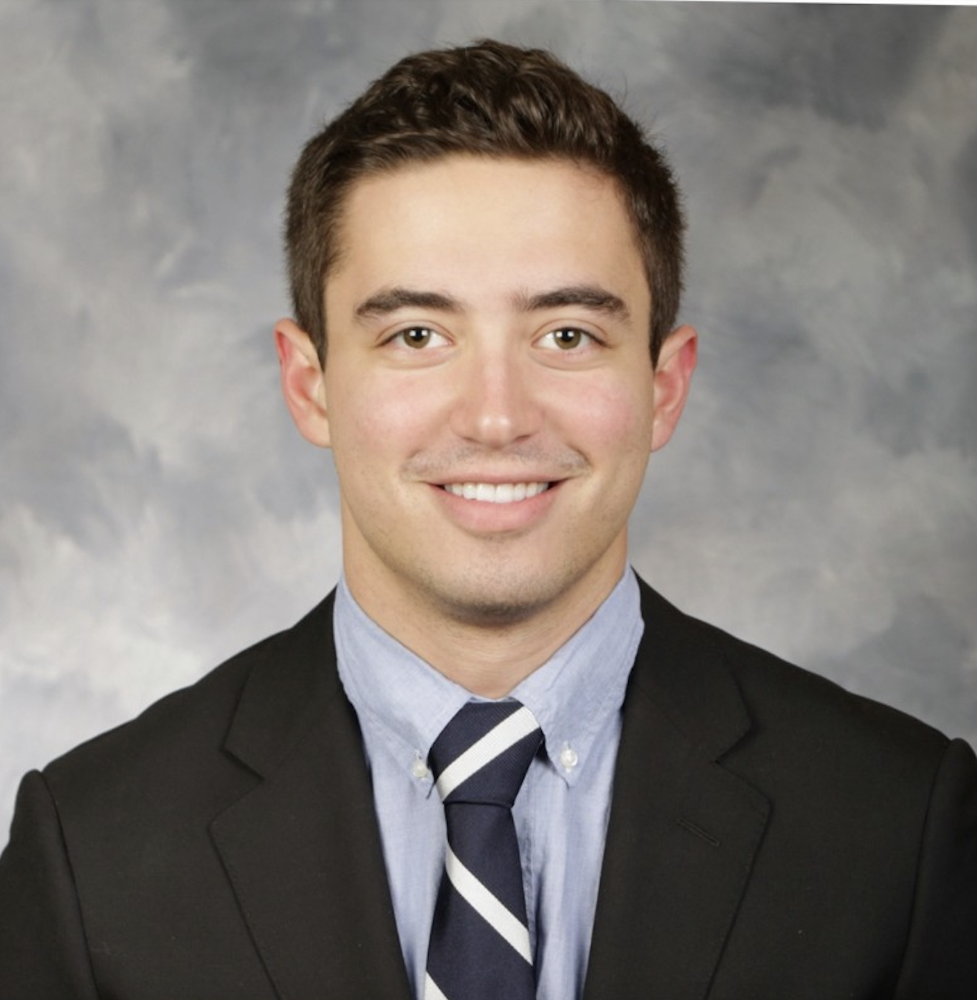
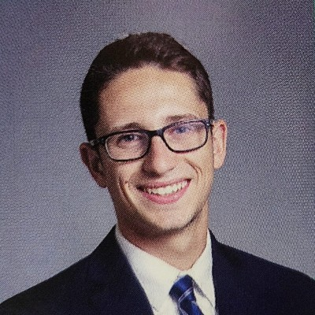
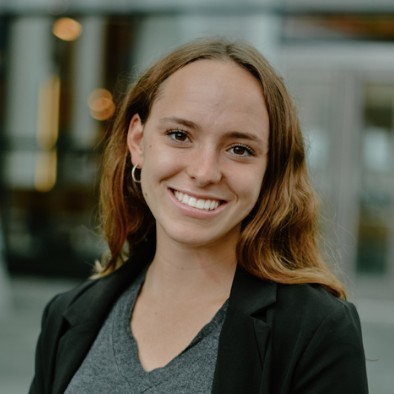
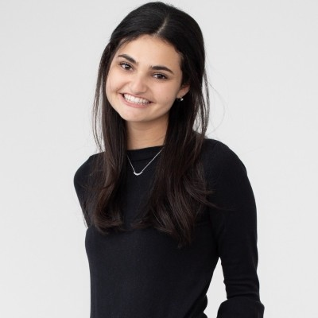
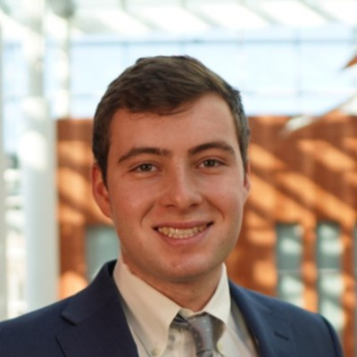
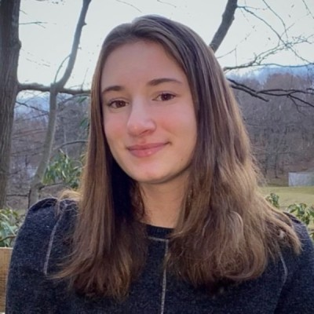

Meet the Team
TOM@University Team

Sarah Wish
U.S. Program Manager/div>
U.S. Program Manager/div>
click to view Sarah's bio
My name is Sarah Wish, and I am currently the Tikkun Olam Makers (TOM) US Program
Manager, leading and developing TOM@University programming and strategy in North America, advising
community leaders, supporting communications and fundraising, and working on website strategy and
development. I have been with TOM since 2020, first as a TOM Fellow at the University of Michigan,
and later as an intern and Program Coordinator. I am proud to advise TOM: University of Michigan as
a part of my current role, given my invaluable experiences there as an undergraduate. I also hold a
BA in Cognitive Science and Psychology from the University of Michigan.
Maayan Keren
Director of TOM@Univeristy
Director of TOM@Univeristy
click to view Maayan's bio
Maayan oversees all TOM activities in North America, including educational
projects in universities and schools. Prior to joining the TOM Global team, Maayan was an Economic
and Social adviser at the Permanent Mission of Israel to the UN, focusing on sustainable
development, innovation and entrepreneurship. She also served as the executive assistant to Israel’s
Ambassador to the UN, Ron Prosor. Before joining the UN mission, Maayan worked as an English editor
and translator for a leading news website in Israel. In her more distant past she was head fashion
designer and creative director for a boutique women’s wear company in NYC. She holds a Master’s
Degree in Public Administration from Columbia University’s School of International and Public
Affairs, and a Bachelor’s Degree in Government (magna cum laude) from the Raphael Recanati
International School at IDC Herzliya.
TOM: Michigan Leadership Team

Leah Feilbogen
TOM: Michigan Co-Fellow
TOM: Michigan Co-Fellow
click to view Leah's bio

Aidan Friedsam
TOM: Michigan Co-Fellow
TOM: Michigan Co-Fellow
click to view Aidan's bio

Jacob Burstein
Need-Knower Coordinator
Need-Knower Coordinator
click to view Jacob's bio

Bella Jureller
Director of Outreach
Director of Outreach
click to view Bella's bio

Maya Posner
Social Media Coordinator
Social Media Coordinator
click to view Maya's bio
Jonah Heimowitz
Co-Treasurer
Co-Treasurer
click to view Jonah's bio

Eli Getz
Co-Treasurer
Co-Treasurer
click to view Eli's bio

Talia Belowich
Director of Partnerships
Director of Partnerships
click to view Talia's bio